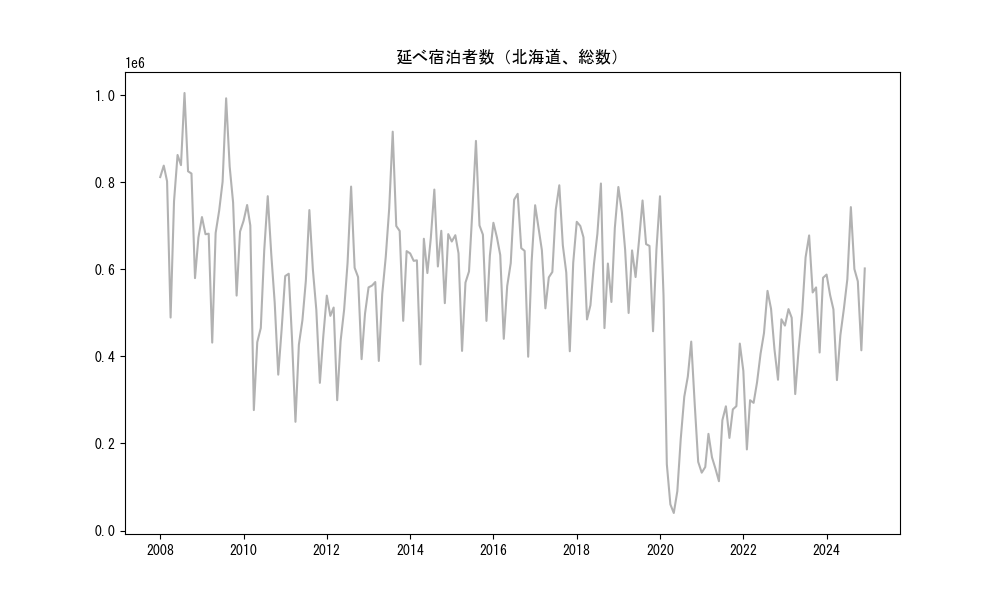
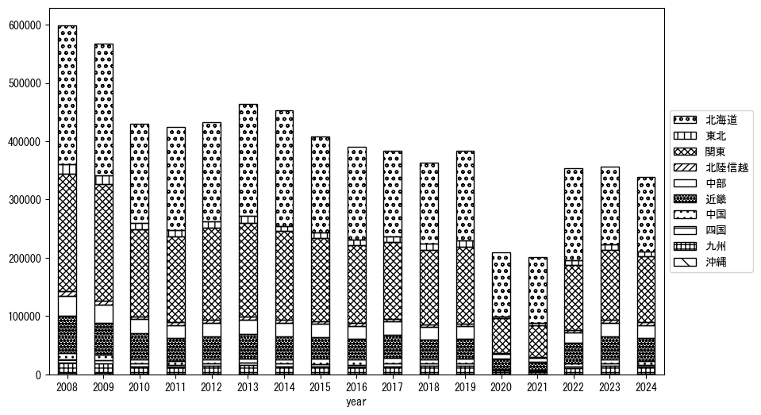
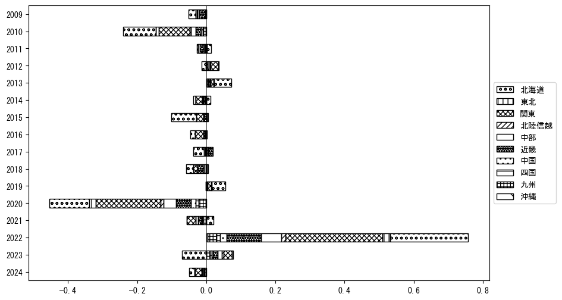

-
トップ
-
北海道
北海道
１．延べ宿泊者（総数）の推移
時系列グラフ

図１：北海道内の従業員数100人以上の宿泊施設での延べ宿泊者数（国外、居住地不詳を含む総数）。
基本統計量
表１：従業員数100人以上の宿泊施設での延べ宿泊者の総数（国外、および居住地不詳を含む）に関する基本統計量。単位は人泊。平均は１か月あたりの平均値を表す。図１に対応。
| 2008年 |
774,908 |
136,761 |
488,982 (4月) |
1,004,598 (8月) |
| 2009年 |
711,612 |
140,141 |
431,472 (4月) |
992,433 (8月) |
| 2010年 |
560,033 |
162,522 |
276,524 (4月) |
767,679 (8月) |
| 2011年 |
498,029 |
130,068 |
249,590 (4月) |
735,823 (8月) |
| 2012年 |
522,267 |
122,903 |
299,222 (4月) |
789,739 (8月) |
| 2013年 |
618,064 |
135,140 |
389,345 (4月) |
915,801 (8月) |
| 2014年 |
622,478 |
98,933 |
381,507 (4月) |
782,848 (8月) |
| 2015年 |
639,801 |
122,631 |
412,369 (4月) |
894,598 (8月) |
| 2016年 |
622,191 |
112,556 |
399,009 (11月) |
773,119 (8月) |
| 2017年 |
630,974 |
106,053 |
411,581 (11月) |
792,734 (8月) |
| 2018年 |
622,567 |
104,341 |
464,752 (9月) |
796,806 (8月) |
| 2019年 |
643,931 |
96,112 |
457,537 (11月) |
788,781 (1月) |
| 2020年 |
283,393 |
215,996 |
40,188 (5月) |
767,530 (1月) |
| 2021年 |
222,325 |
90,483 |
113,187 (6月) |
429,221 (12月) |
| 2022年 |
387,537 |
103,539 |
186,143 (2月) |
550,249 (8月) |
| 2023年 |
507,989 |
100,175 |
313,256 (4月) |
677,551 (8月) |
| 2024年 |
537,240 |
103,245 |
345,344 (4月) |
742,630 (8月) |
２．宿泊者数の重心（年平均の推移）
図２：北海道内の従業員数100人以上の宿泊施設での延べ宿泊者数（国外、居住地不詳を除く）の重心（年平均の推移）。
全画面表示
重心の前年平均からの移動距離と方位、および緯度・経度
表２：重心の前年平均からの移動距離と方位、および緯度・経度。図２に対応。
| 2008年 |
— |
— |
38.5206 |
139.1922 |
| 2009年 |
東 |
5.4km |
38.5202 |
139.2541 |
| 2010年 |
西 |
1.8km |
38.5222 |
139.2332 |
| 2011年 |
北北東 |
26.9km |
38.7344 |
139.3818 |
| 2012年 |
南南西 |
25.2km |
38.5207 |
139.2846 |
| 2013年 |
北 |
14.8km |
38.6521 |
139.3144 |
| 2014年 |
北北東 |
15.0km |
38.7785 |
139.3767 |
| 2015年 |
南南西 |
29.3km |
38.5453 |
139.2179 |
| 2016年 |
北 |
3.5km |
38.5768 |
139.2226 |
| 2017年 |
南南西 |
28.4km |
38.3568 |
139.0576 |
| 2018年 |
東 |
5.1km |
38.3577 |
139.1164 |
| 2019年 |
北北東 |
15.6km |
38.4906 |
139.1729 |
| 2020年 |
北北東 |
163.6km |
39.8503 |
139.9017 |
| 2021年 |
東 |
4.3km |
39.8501 |
139.9523 |
| 2022年 |
南南西 |
112.2km |
38.9346 |
139.3996 |
| 2023年 |
南南西 |
73.2km |
38.3407 |
139.0355 |
| 2024年 |
北北東 |
2.1km |
38.3587 |
139.0437 |
運輸局別延べ宿泊者数
時系列（年平均）

図３：北海道内の従業員数100人以上の宿泊施設での１か月あたり平均延べ宿泊者数（国外、居住地不詳を除く）の運輸局別内訳。
寄与度（前年からの変化率に対する）

図４：北海道内の従業員数100人以上の宿泊施設での運輸局別延べ宿泊者数（国外、居住地不詳を除く）から求めた寄与度。
３．宿泊者数の重心（月別）
図５：北海道内の従業員数100人以上の宿泊施設での延べ宿泊者数（国外、居住地不詳を除く）の重心（月別）。観測期間は2008年1月から2024年12月まで。
全画面表示
全期間（2008年1月～2024年12月）の平均と月別平均の比較
表３：全期間の平均から月別平均までの移動距離と方位、および緯度・経度。図５に対応。
| 全期間 |
— |
— |
38.7006 |
139.3034 |
| 1月 |
北 |
42.1km |
39.0790 |
139.3399 |
| 2月 |
南南西 |
38.6km |
38.3972 |
139.0862 |
| 3月 |
北北東 |
30.4km |
38.9552 |
139.4321 |
| 4月 |
北北東 |
91.5km |
39.4599 |
139.7149 |
| 5月 |
北北東 |
30.8km |
38.9632 |
139.4166 |
| 6月 |
南南西 |
44.8km |
38.3340 |
139.0871 |
| 7月 |
南南西 |
44.0km |
38.3124 |
139.2040 |
| 8月 |
南 |
42.1km |
38.3232 |
139.3457 |
| 9月 |
南 |
43.5km |
38.3158 |
139.2106 |
| 10月 |
南南西 |
30.5km |
38.4702 |
139.1132 |
| 11月 |
北北東 |
38.2km |
39.0251 |
139.4485 |
| 12月 |
北西 |
9.6km |
38.7721 |
139.2416 |
運輸局別延べ宿泊者数
月別平均（2008年1月～2024年12月）
 図６：北海道内の従業員数100人以上の宿泊施設での延べ宿泊者数（国外、居住地不詳を除く）の運輸局別内訳（月別）。
図６：北海道内の従業員数100人以上の宿泊施設での延べ宿泊者数（国外、居住地不詳を除く）の運輸局別内訳（月別）。
寄与度（全期間の平均から月別平均への変化率に対する）
 図７：北海道内の従業員数100人以上の宿泊施設での運輸局別延べ宿泊者数（国外、居住地不詳を除く）から求めた寄与度（月別）。
図７：北海道内の従業員数100人以上の宿泊施設での運輸局別延べ宿泊者数（国外、居住地不詳を除く）から求めた寄与度（月別）。
４．データのダウンロード
出典：観光庁「宿泊旅行統計調査」に収録された「施設所在地、居住地別延べ宿泊者数（従業員数100人以上の施設）」
国土地理院「白地図（地理院タイル）」（図２と図５）